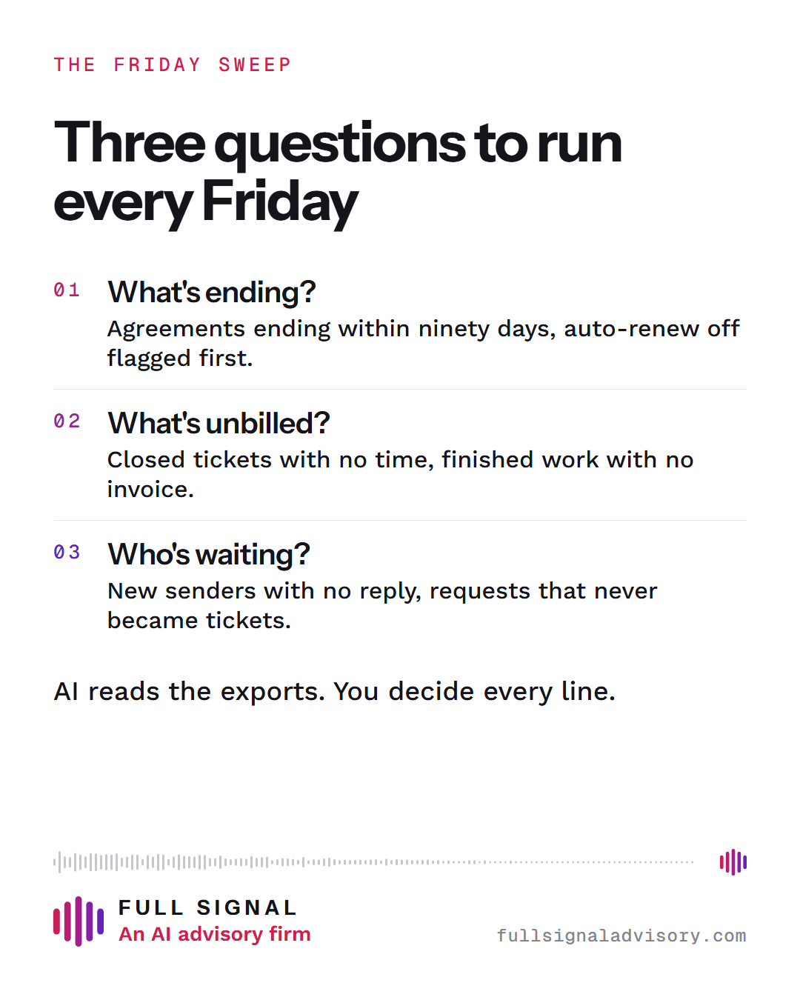

IT and managed service firms
Friday, 4:40 PM, and the last ticket of the week is closed. The service agreement for your second-largest client ended on Tuesday, and nobody noticed, because the person who would notice is you.
If you run an IT or managed service firm of a few people, you are the dispatcher, the tech who still takes field calls, the billing department and the account manager. The work gets done. What slips is everything around the work.
The owners I talk to name the same few things. An agreement or a subscription runs out and nobody decided whether it should. Time gets logged by hand at the end of the day, or the end of the week, or not at all. A new sender emails a question, it sits in the inbox, and by the time you find it they have called someone else. A job is finished and never makes it onto an invoice.
None of these is a technical failure. Each one is a small thing nobody was assigned to watch.
What it costs
Renewals cost more than they used to. Under a change Microsoft announced for CSP partners, from April 1, 2026 a subscription that expires with auto-renew switched off no longer gets a free grace period. Unless someone sets it to cancel, it moves to a month-to-month extended term billed at the standard monthly rate plus a 3% uplift (Microsoft). A renewal nobody decided on keeps billing, and either you absorb it or you explain it to a client.
Unlogged time is quieter. Two hours a week of work that never gets a time entry, at $150 an hour, comes to $15,600 a year. That figure is illustrative; put in your own rate.
The lapsed agreement and the unanswered new sender cost the most, because they are clients. In Kaseya's 2026 State of the MSP report, 71% of more than 1,000 MSPs said winning new customers is their top challenge (Kaseya). A client who drifts because nobody followed up hands you more of that problem.
The Friday Sweep
The usual advice is to start with AI on meeting notes and email drafts. For an owner who is the only system, start with what nobody is watching.
The Friday Sweep is one weekly pass with three questions.
- What's ending? Agreements, contracts and subscriptions that end in the next 90 days, with auto-renew off flagged first.
- What's unbilled? Closed tickets with no time logged, and finished work that has not been invoiced.
- Who's waiting? New senders with no reply, and client requests that never became a ticket.
AI does the reading. You do the deciding. It goes through the exports you already have (your PSA's closed tickets and time entries, your agreements list, your distributor's renewal report, the week's inbox) and hands back one short list. It does not send anything, renew anything or change a record. You read the list, you make the calls, and anything that goes to a client goes from you, as your business.
That control is what owners ask me about first. You also end up with a dated record of what was checked each week, which is worth having the next time a client asks what happened.

Shown working
My own version runs every morning rather than on Fridays. Before I open my inbox, a brief is waiting with what's due today, who replied overnight and what slipped yesterday. It reads. I decide.
The "who's waiting" pile is one I took on for an IT and managed services firm this fall. Since November 1, new client emails at that firm open tickets on their own, and Claude does the level 1 triage their previous AI tool used to do. A new sender is designed to land in the queue instead of sitting in someone's inbox until Friday.